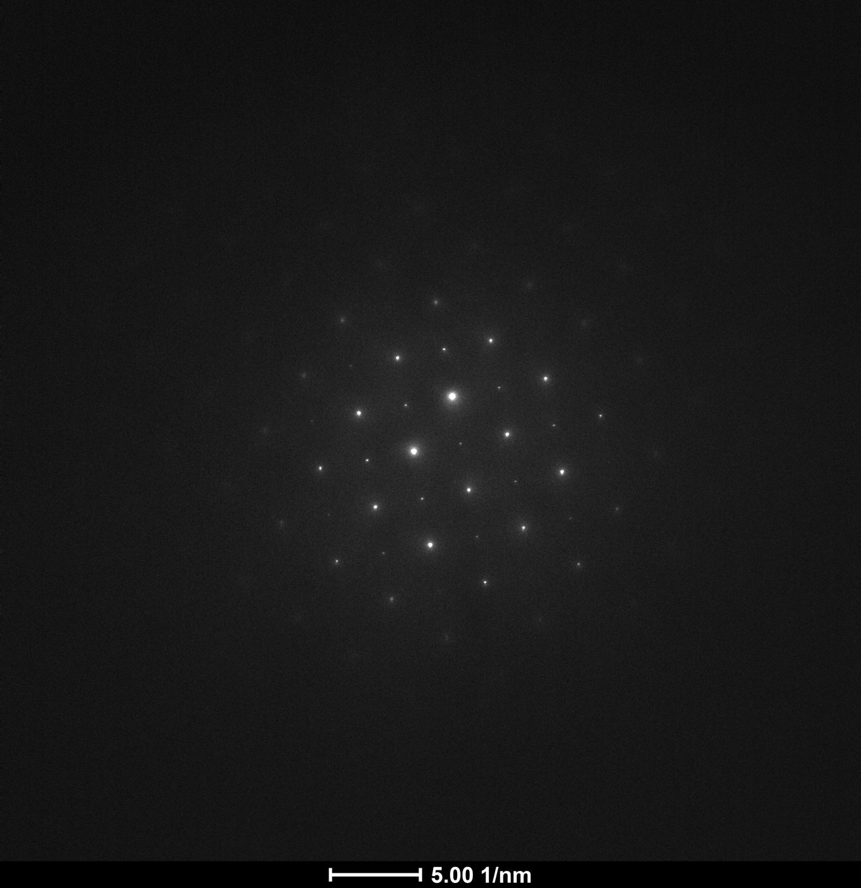
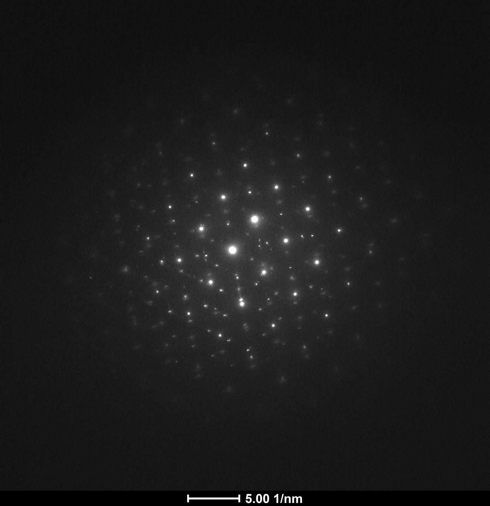
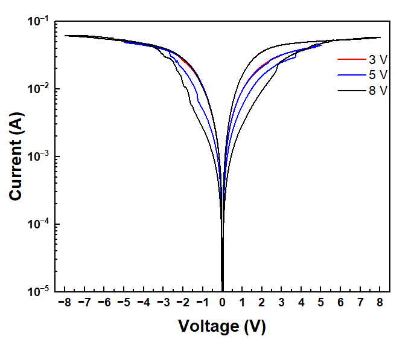
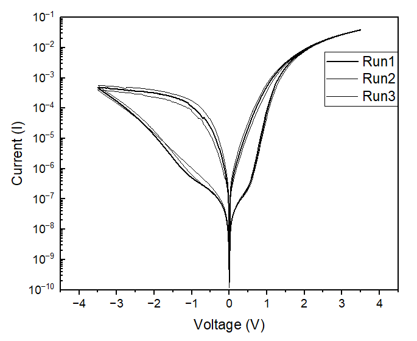

Thin-film growth and device function
A memory element should retain a resistance state after programming. Its selector should conduct when addressed and return to a low-conductance state when the bias is removed. In my independent 1S1R study in Wang’s Thin Film Group, I investigated what happens to those functions when the films are grown together in a vertical stack.
Growing and comparing test structures
I deposited oxide thin films by pulsed laser deposition, varied growth conditions, and compared electrical switching across specimens. I studied individual films alongside integrated structures so I could ask where a change in behavior first appeared. X-ray diffraction helped me examine film growth, and cross-sectional microscopy let me inspect the buried interfaces.

Separating film and substrate diffraction
The substrate contributes its own diffraction spots. I used a substrate-only pattern as a reference for the region containing both film and substrate. Additional spots are visible in the combined pattern. Assigning them to a particular phase would require indexing the reflections.


Relating interfaces to switching
An integrated sample showed memory-like switching where I expected a selector response. To interpret that result, I compared electrical sweeps from separate test films. On a VO₂ specimen, I compared the current over three voltage ranges. On a resistive-memory specimen, I repeated the sweep to check whether the separation between branches recurred.


These sweeps establish how the separate films respond during a voltage scan. To verify selector action in the integrated device, I also need to determine whether it returns to low conductance when the bias is removed.
Broader thin-film studies
My materials work also spans ferroelectric and ferromagnetic heterostructures, vanadium dioxide phase-change films, and devices with two-dimensional barriers. Across these systems, I use diffraction, microscopy, and electrical measurements to examine how growth, morphology, and interfaces affect device properties.